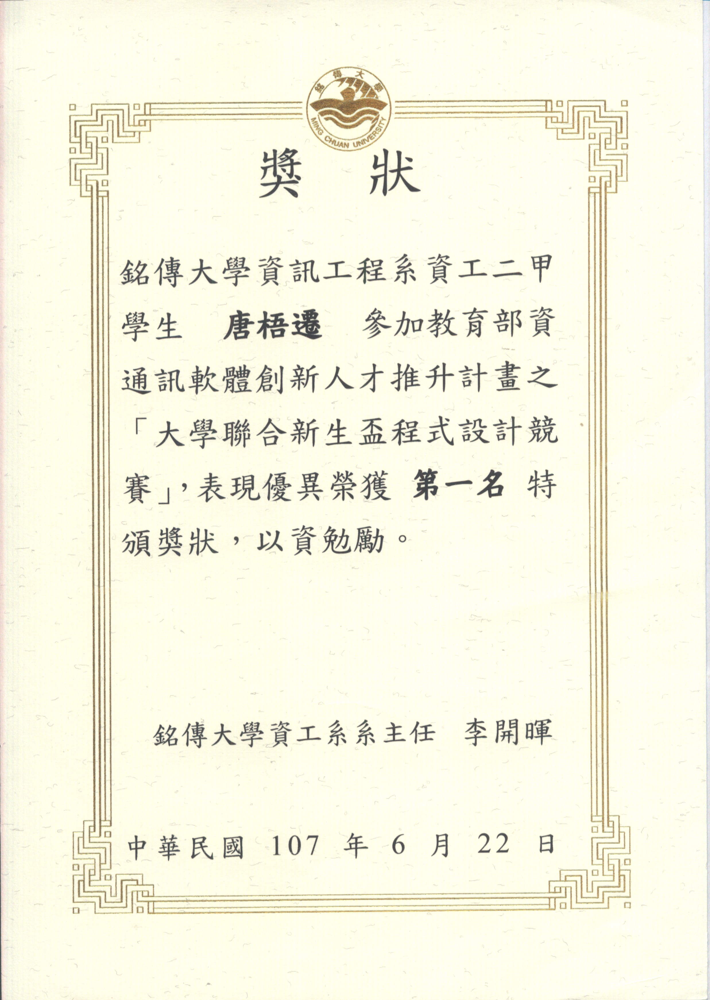

Skip to content
WT
Wuqian Tang
Back to homepage
Awards & Honors · Jun 2018
First Place, Intercollegiate Freshman Cup Programming Contest
[Certificate]
Certificates
1

Certificate · 2018-06-22 · Chinese
Open original
Close
×
← Previous
Next →